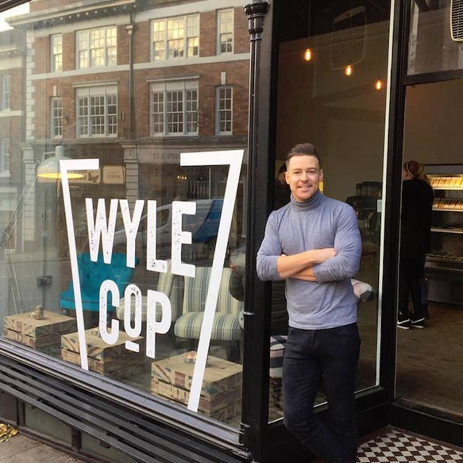

Having opened several of your own businesses, what inspired you to open your own independent businesses?
I've always thought about having my own business so when I used to work in retail I used to write a lot of ideas out of how I would go about it, write my own if I had my own retail business. So I used to work for pockets and then obviously with travelling I got into the bar industry and then again just started writing ideas about if I had my own bar. If ever I saw anything that I liked I would write that down and without consciously doing that all those ideas fell into my business plan and when I did come back to Shrewsbury I worked at mad jacks just to learn more about the industry at a manager level and then just implemented everything that I liked and saw and put it all into one really.
What do you think the key to success is as an independent business owner?
Everyone will always tell you customer service. It?s the big hello and big goodbye and that whether they come in and had a glass of water for free or whether they have come and spent 100 pounds bar tab, it doesn't matter. The other thing as well, we don't just try and hire people that can come in and do a job and go home. We try and employee people that bring the personality to it and I encourage that. Chain Stores want to stay away from personalities because they obviously they want consistent customer service whereas I encourage my staff to wear more of a flamboyant outfit.
Do you think the independent businesses of Shrewsbury need more awareness and how do you think collectively businesses could do this?
I think Shrewsbury's independent businesses do really well. There are a lot of places like Chester for example, and it used to be full of independents and now you go there and it?s just empty and it is full of chain stores. Whereas Shrewsbury you walk up Wyle Cop, down the main streets and they are still full of independent businesses everywhere.
What?s your favourite independent business in Shrewsbury (other than your own) and why?
Pocket because Paul's got a great thing going there. The business has changed since I worked there but maybe I am bias but I see how hard Paul works on it and he was the one who taught me about customer service, whether it was as soon as you see the customer coming in he will run to the door to open it for them or if it meant someone needed a pair of trousers altered for that night, Paul would go get them altered and jump in his car and drive them around the guys house. I know how hard he works there, I'm sure every place does but just having that first-hand knowledge, I've got a bit to owe him for giving me that mind set really. That is one of the things with the libertine what we wanted to do was bring a retail customer service to a bar. Bars traditionally customers would walk to the bar stand there waiting for a drink, whereas at The Libertine we would like to think someone would come in and take a seat and we will come and take their order unless it is a busy Saturday night but that is where our priorities lie and that's what I got from Paul.
What inspired you to open another libertine in Aberystwyth?
The ten year plan is to have ten businesses but we looked at a lot of places and did a SWOT analysis on them. I did it for Shrewsbury and I thought about Chester and they have their races, they've got the university but the hardest thing were the threats for Chester and that was keeping people in Chester because you've got Manchester and Liverpool which have these amazing bars and restaurants on their door step. I went to a bar when I was checking out Chester once and I asked them where is the best place to go was after here and they said Liverpool and I thought to myself what's really good about Shrewsbury and I thought about all the catchment areas because you've got Telford that's has around 165,000 people but they have nothing bar wise. So you know where are they going to go? Wolverhampton or Shrewsbury and it's same with Bridgenorth. With Ludlow its either Shrewsbury or Hereford, so you've got all these massive catchment areas which makes Shrewsbury really population massive. It's the same with Aberystwyth, they've got 15,000 students that want go out on week nights and there is only two clubs, and they've got all the bars that open that are just built for students which close when the students aren't there. There is also this bar which is busy 7 nights a week because they're trying to look after the locals and the locals love it. We thought if we went down the route of making sure we looked after the locals of aberwysth which would be our main customer but also the students as well, so we do happy hour and it's really worked well for us.
What's your favourite cocktail?
Its changed so much over the years, classically it's just a mojito, I always feel I can tell a bar by its mojito because there is loads of different elements in it and lots of ingredients that need to be fresh, like fresh lime, fresh mint but then it's also what rum they use, what glass they use and the ice is really important, whether the ice is like snow or it's a big clump. That is how I traditionally check a bar out. That's why we always try and do a reconstructed one here with a little bit of a dark rum top but now as I get older I like old fashions, not only because it's obviously a very classic cocktail but because I prefer sipping drinks. With different cocktails people get frustrated with ice but there is a reason it is there. If it was a cocktail like a Singapore sling and it has cubed ice, it's got to be so cold so you don't want the ice to dilute quickly. Whereas a mojito, it's just pure rum, lime, sugar and mint with alcohol, that's why it's made with crushed ice because crushed ice dilutes quicker, where your old fashions you dilute it yourself and you make it perfect but you don't want too much ice as it'll get too watery so it's things like that. Ice is so important, people don't realise how important ice is. Sometimes you get people in here saying I don't want all that ice , that's fine but it's not going to be the same cocktail as your what your friend is having.
What's your favourite dish as the House of the Rising sun?
The thing I've eaten the most is the teriyaki beef and that is our best seller. I also love the squid tempura, because it's all little bits. My favourite bit of the new menu is the Scotch egg, the Japanese style scotch egg.
What was your inspiration for The Libertine?
The inspiration for? The Libertine? was from places like Melbourne and Sydney that I travelled too, I went to all these amazing quirky bars. Before the libertine a bar would open and it would be your yates or whetherspoons and it would be full of masses of people and I wanted a place that was good atmosphere on a Monday just as a Saturday so when you come in here and there are ten people and it feels comfortable. Whereas if you went into Yates on a Monday night and was just and 4 people and this massive bar, you'd just be wanting to finish your drink and go. I also wanted to give Shrewsbury a little bit of city life. When we first opened, people would tell me they forgot they were in Shrewsbury and we still get that now in the house of the rising sun all the time now. That was the goal really, whether that was serving cocktails in teapots or unusual vessels, it was all to add to the experience. I wanted people to come in and go ?wow, look at the furniture, it's all different? or ?oh wow look at the pommel horse and look at that the cupboards open?, I wanted people to not come in and just be amazed at one thing, I wanted it to be constant. And again with the cocktails we wanted to do all the classics and but also all our own signature ones, like the ?fudged up? with the dry ice or the smoked old fashioned with the maple wood. We've also had the teapot one, we've done ones in plant pots and we've done ones in pineapples! Even with the day time business we've always had coffee served in tea cups, and loose leaf tea and you vintage teapots so it's just constantly giving people something a little bit different.
What was your inspiration for ?The House of the Rising Sun?
That was also Australia because over there it was all this healthy living. I used to get of the tube in sydney and there used to be sushi stands whereas if you get off the tube in London, its chocolate and crisp stands. Also in Australia there was that massive thing of sharing food because of course its Australasia so there's a massive Asian influence there, they love Asian food. You'd go to an Australian restaurant but they would do sushi and they would do you tempuras. The sushi is nice and its healthy and it was eating lots of bits and pieces and I really liked that. They always say to us, you brits, you love your big portions of stuff but sometimes if I go for a Sunday roast I get full whereas if I've got like a little bit of sushi, tempura, teryiaki beef, some noodles or rice to compliment it and you're just tucking away at it with a friend, that's just my preferred way. I feel it has a good social element to it as well and its tasty, has different flavours with each thing. I just thought that there is nothing like that in Shrewsbury and people have really taken to it and it's still growing. We've had a recent review from Andy Richardson, we've had two from him now and they've both been amazing. He's goes into the produce we use here and it complements the food. At the end of the day we are doing global favours but we are sourcing locally sourced products, which comes back to Shrewsbury independents working together.
Libertine website
design by Emily Fellows - Portfolio